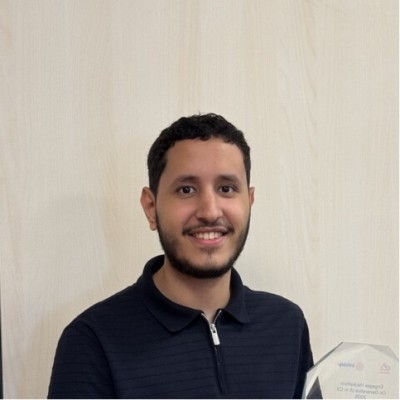

01 / DEFENCE
Defensive
security↗
Find the signal. Understand the threat. Make the next move clear.
- SOC analysis & incident response
- IOC extraction & ATT&CK mapping
- Splunk, Autopsy & Wireshark
I break systems.
I defend them.
And I build what’s next.
Cybersecurity graduate. AI engineer. Builder.
Turning complex threats into clear intelligence
and ideas into systems that work.

I work where security, software and intelligence meet. Understanding how systems break makes me better at building systems that last.
I trained on the offensive side through a red team internship and OSCP lab work. On defence, I’ve investigated incidents, worked with SOC tooling, and built a threat intelligence platform for a practising CISO.
I also lead teams and write Python and TypeScript. My AI pipelines are built around validation, confidence thresholds, audit trails, and a human in the loop. Before university, four years building automated trading systems taught me to make unattended code reliable.
From finding the weakness to engineering
the solution. Here’s where I fit.
Find the signal. Understand the threat. Make the next move clear.
Think like an attacker. Report like an advisor. Help teams get stronger.
Intelligence with guardrails. Full-stack products with a purpose.
An AI-powered platform that turns real-world threats into actionable intelligence and practical learning. Built for the CISO of DEF-X Cyber Intelligence.
Before university, I spent four years writing automated trading systems for stocks and forex. Turning an idea into precise rules, coding entries, exits and position sizing, then backtesting before running it.
It taught me an enduring lesson: when code runs unattended against live data, reliability isn’t optional.
Teams led. Systems built.
Lessons carried forward.
10 completed credentials. Tap any one to see it.
OSCP in progress. Always another lab.
Curtin University Dubai · With Distinction
Network Security · Penetration Testing · Digital Forensics · Cryptography · Machine Learning · Cloud ComputingVIEW DEGREE ↗AI engineering. Security. Software.
If you’re building something meaningful,
I’d like to be part of it.